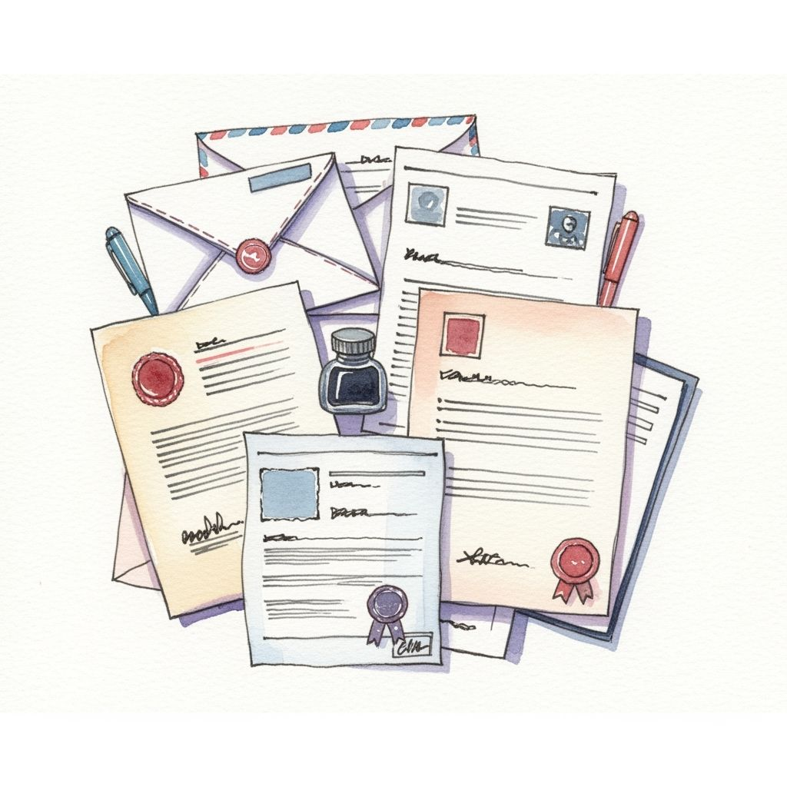
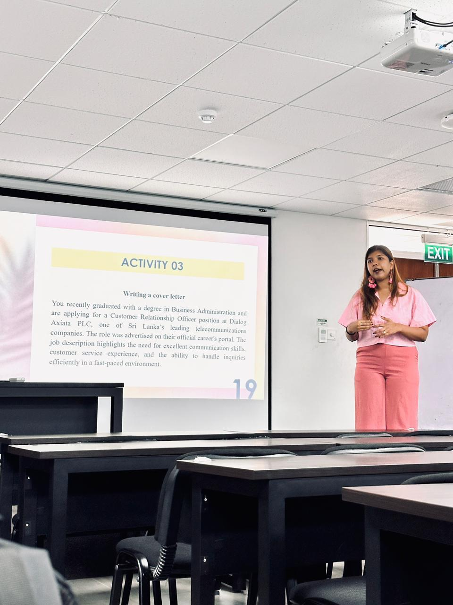

PROFESSIONAL SKILLS / SESSION 02
CV Writing & Cover Letter Writing
Preparing professional documents for job applications.

Overview
Preparing professional documents for job applications.
Learning outcomes
- Understand the differences between a CV and a résumé.
- Present qualifications, skills, and achievements effectively.
- Prepare a professional CV and cover letter.
Activities
CV and cover letter structure, content, and presentation.
My reflection
During this session, I learned how to prepare a professional CV and cover letter for job applications. I understood the differences between a CV and a résumé and how to present my qualifications, skills, and achievements effectively. This knowledge will be useful when applying for internships and future jobs.
Learning in the classroom


